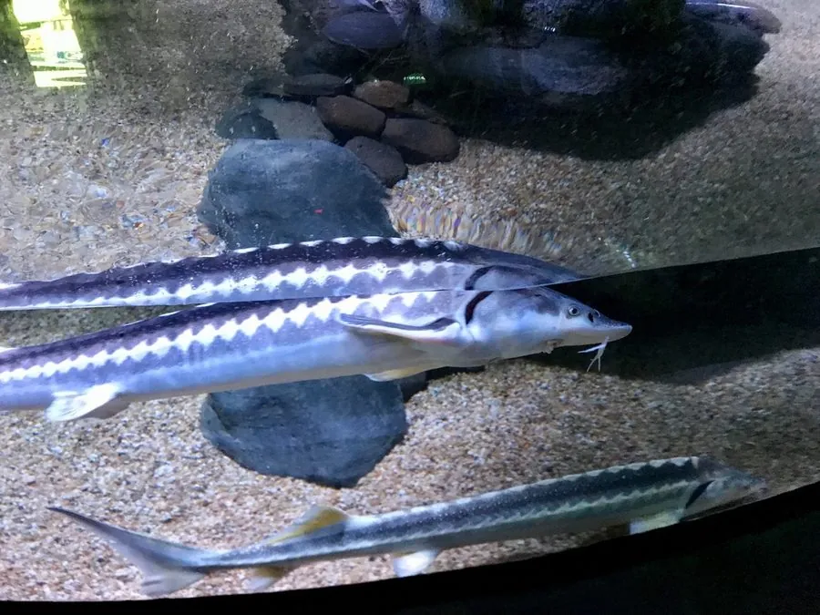

鱼类 · 动物界
俄罗斯鲟 Acipenser gueldenstaedtii

里海和黑海流域的大型溯河鲟鱼，吻部尖长、体被骨板，鱼卵可制成名贵鱼子酱，因过度捕捞被列为极危。
- 分类
- 门脊索动物门纲辐鳍鱼纲目鲟形目科鲟科属鲟属
- 栖息环境
- 里海、黑海和亚速海及其入海河流，产卵期溯河而上
- 地理分布
- 里海、黑海、亚速海流域，包括伏尔加河、顿河等河流
- 保护级别
- IUCN 极危（CR）；《濒危野生动植物种国际贸易公约》附录Ⅱ
物种志
俄罗斯鲟体呈长纺锤形，吻部尖长，口下位，前方有 4 根触须。体表没有普通鱼类的鳞片，而是覆盖着 5 列骨板，背部和体侧最为明显；体色背部灰褐或深绿，腹部浅黄。成鱼体长一般 1.2–2 m，体重 30–80 kg，最大记录可超过 100 kg。
俄罗斯鲟是溯河洄游鱼类，平时生活在里海、黑海和亚速海，性成熟后溯河进入伏尔加河、顿河等大河产卵。它以底栖动物为主食，吃软体动物、甲壳类和小鱼。由于鱼卵可制成名贵鱼子酱，俄罗斯鲟长期遭到过度捕捞，加上河流筑坝阻断了产卵洄游通道，野生种群急剧下降，IUCN 将其列为极危。目前市场上的俄罗斯鲟多来自人工养殖，中国也有养殖种群。
形态与习性
- 食性底栖动物为主，吃软体动物、甲壳类和小鱼
- 体长一般 1.2–2 m，最大可超过 2.3 m
- 体重一般 30–80 kg，大型个体可超过 100 kg
- 寿命野外可达 30–40 年
- 繁殖溯河产卵，雌鱼每隔 2–3 年产卵一次
- 体表覆盖 5 列骨板，吻部尖长、口下位
- 保护因鱼子酱贸易和河流筑坝导致种群锐减
趣味知识
- 俄罗斯鲟的鱼卵可制成名贵的鱼子酱，这也是它遭到过度捕捞的主要原因。
- 它没有普通鱼类的鳞片，体表覆盖着 5 列坚硬的骨板。
- 俄罗斯鲟平时生活在海里，繁殖期才溯河而上，到河流上游的砾石底产卵。